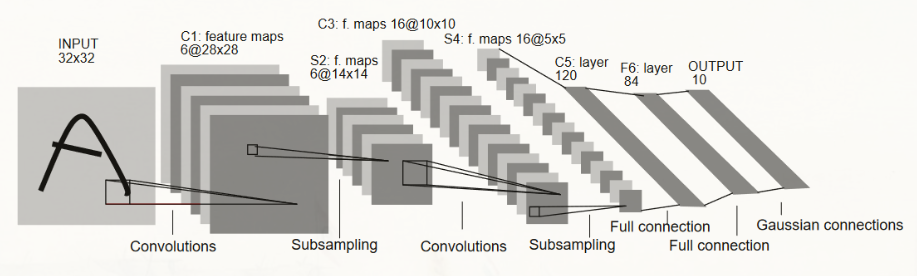
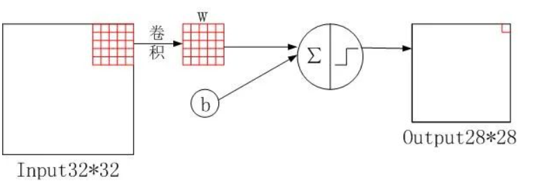
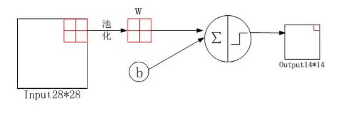
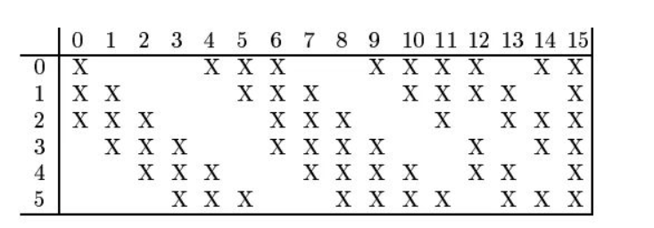

本文使用LeNet5识别手写数字。
LetNet-5 的基本结构
LeNet-5包含7层网络结构（不含输入层），包含两个卷积层、两个降采样层（池化层）、两个全连接层和输出层。

输入层的大小为32×32手写图像，在实际应用中，通常会对图像进行预处理，如对像素进行归一化。
2、卷积层C1（Convolutional layer C1）

代码：
1
| nn.Conv2d(1, 6, kernel_size=5, padding=2)
|
根据代码的含义，通道数从1变6，原图的尺寸从32×32变为28×28，这与卷积核大小、步幅和$padding$有关，其输出的特征图像尺寸如下：
$$
output size = \frac{W-kernelsize+2×padding}{stride}+1
$$
其中，$W$表示输入图像的宽度。
$$
output size = \frac{32-5+2×0}{1}+1 = 28
$$
代码：
在卷积操作完成之后会进行归一化（Batch Normalization）操作提高神经网络和加速收敛
3、采样层S2（Subsampling layer S2）

代码：
1
| nn.Conv2d(6, 16, kernel_size=5)
|
通道数没有发生过改变，计算公式如下：
$$
outputsize =\frac{W-poolsize}{stride}+1 = \frac{28-2}{2}+1 = 14
$$
然后同上，进行批量归一化。
4、卷积层C3（Convolutional layer C3）
代码：
1
| nn.Conv2d(6, 16, kernel_size=5)
|
通道数由6变16，输出特征图尺寸为10x10，具体计算如下：
$$
output size = \frac{W-kernelsize+2×padding}{stride}+1 = \frac{14-5+2×0}{1}+1 = 10
$$
该层较为特殊，16 个卷积核并不是都与 S2 的 6 个通道层进行卷积操作，如下图所示，C3 的前六个特征图（0,1,2,3,4,5）由 S2 的相邻三个特征图作为输入，对应的卷积核尺寸为：5x5x3；接下来的 6 个特征图（6,7,8,9,10,11）由 S2 的相邻四个特征图作为输入对应的卷积核尺寸为：5x5x4；接下来的 3 个特征图（12,13,14）号特征图由 S2 间断的四个特征图作为输入对应的卷积核尺寸为：5x5x4；最后的 15 号特征图由 S2 全部(6 个)特征图作为输入，对应的卷积核尺寸为：5x5x6。

5、采样层S4（Subsampling layer S4）
代码：
1
| nn.AvgPool2d(kernel_size=2, stride=2),
|
特征图尺寸由10×10变成5×5，输出通道还是16。
$$
outputsize = \frac{W-kernelsize}{stride}+1 = \frac{10-2}{2} +1 = 5
$$
6、全连接层C5（Fully connected layer C5）
代码：
1
| nn.Linear(16 * 5 * 5, 120)
|
C5将每个大小为 5×5 的特征图拉成一个长度为400**(维度为1X16X5X5)**的向量，并通过一个带有120个神经元的全连接层进行连接。120是由LeNet-5的设计者根据实验得到的最佳值。
7、全连接层F6（Fully connected layer F6）
全连接层F6将120个神经元连接到84个神经元。
8、输出层（Output layer）
输出层由10个神经元组成，每个神经元对应0-9中的一个数字，并输出最终的分类结果。
搭建网络
1
2
3
4
5
6
7
8
9
10
11
12
13
| import torch
from torch import nn
from d2l import torch as d2l
net = nn.Sequential(
nn.Conv2d(1, 6, kernel_size=5, padding=2), nn.Sigmoid(),
nn.AvgPool2d(kernel_size=2, stride=2),
nn.Conv2d(6, 16, kernel_size=5), nn.Sigmoid(),
nn.AvgPool2d(kernel_size=2, stride=2),
nn.Flatten(),
nn.Linear(16 * 5 * 5, 120), nn.Sigmoid(),
nn.Linear(120, 84), nn.Sigmoid(),
nn.Linear(84, 10))
|
加载数据集
1
2
3
4
5
6
7
8
9
10
11
12
13
14
15
16
17
18
19
20
21
22
23
24
25
26
27
28
29
30
|
train_dataset = torchvision.datasets.MNIST(root = './data',
train = True,
transform = transforms.Compose([
transforms.Resize((32,32)),
transforms.ToTensor(),
transforms.Normalize(mean = (0.1307,),
std = (0.3081,))]),
download = True)
test_dataset = torchvision.datasets.MNIST(root = './data',
train = False,
transform = transforms.Compose([
transforms.Resize((32,32)),
transforms.ToTensor(),
transforms.Normalize(mean = (0.1325,),
std = (0.3105,))]),
download=True)
batch_size = 64
train_loader = torch.utils.data.DataLoader(dataset = train_dataset,
batch_size = batch_size,
shuffle = True)
test_loader = torch.utils.data.DataLoader(dataset = test_dataset,
batch_size = batch_size,
shuffle = False)
|
- 测试阶段的
shuffle=False：在测试阶段，通常不需要打乱数据的顺序。测试时模型是在未见过的数据上进行评估，因此希望模型看到的是原始数据的有序顺序，以便能够更好地评估模型的泛化性能。如果在测试时也打乱数据，可能会导致模型在评估时看到的数据分布与实际场景不一致。（其实如果是True影响也不大）
设置评价指标
1
2
3
4
5
6
7
8
9
10
11
12
13
14
15
16
17
18
| def evaluate_accuracy_gpu(net, data_iter, device=None):
"""使用GPU计算模型在数据集上的精度"""
if isinstance(net, nn.Module):
net.eval()
if not device:
device = next(iter(net.parameters())).device
metric = d2l.Accumulator(2)
with torch.no_grad():
for X, y in data_iter:
if isinstance(X, list):
X = [x.to(device) for x in X]
else:
X = X.to(device)
y = y.to(device)
metric.add(d2l.accuracy(net(X), y), y.numel())
return metric[0] / metric[1]
|
模型训练
1
2
3
4
5
6
7
8
9
10
11
12
13
14
15
16
17
18
19
20
21
22
23
24
25
26
27
28
29
30
31
32
33
34
35
36
37
38
39
40
|
def train_ch6(net, train_iter, test_iter, num_epochs, lr, device):
"""用GPU训练模型(在第六章定义)"""
def init_weights(m):
if type(m) == nn.Linear or type(m) == nn.Conv2d:
nn.init.xavier_uniform_(m.weight)
net.apply(init_weights)
print('training on', device)
net.to(device)
optimizer = torch.optim.SGD(net.parameters(), lr=lr)
loss = nn.CrossEntropyLoss()
animator = d2l.Animator(xlabel='epoch', xlim=[1, num_epochs],
legend=['train loss', 'train acc', 'test acc'])
timer, num_batches = d2l.Timer(), len(train_iter)
for epoch in range(num_epochs):
metric = d2l.Accumulator(3)
net.train()
for i, (X, y) in enumerate(train_iter):
timer.start()
optimizer.zero_grad()
X, y = X.to(device), y.to(device)
y_hat = net(X)
l = loss(y_hat, y)
l.backward()
optimizer.step()
with torch.no_grad():
metric.add(l * X.shape[0], d2l.accuracy(y_hat, y), X.shape[0])
timer.stop()
train_l = metric[0] / metric[2]
train_acc = metric[1] / metric[2]
if (i + 1) % (num_batches // 5) == 0 or i == num_batches - 1:
animator.add(epoch + (i + 1) / num_batches,
(train_l, train_acc, None))
test_acc = evaluate_accuracy_gpu(net, test_iter)
animator.add(epoch + 1, (None, None, test_acc))
print(f'loss {train_l:.3f}, train acc {train_acc:.3f}, '
f'test acc {test_acc:.3f}')
print(f'{metric[2] * num_epochs / timer.sum():.1f} examples/sec '
f'on {str(device)}')
|
animator = d2l.Animator(xlabel='epoch', xlim=[1, num_epochs],legend=['train loss', 'train acc', 'test acc'])此代码为绘制折线图- 以上代码个 epoch 结束时都会计算并得到一次测试集的准确率，并将其记录下来
最终得到训练结果
1
2
| lr, num_epochs = 0.9, 10
train_ch6(net, train_iter, test_iter, num_epochs, lr, d2l.try_gpu())
|
1
2
| loss 0.469, train acc 0.823, test acc 0.779
55296.6 examples/sec on cuda:0
|